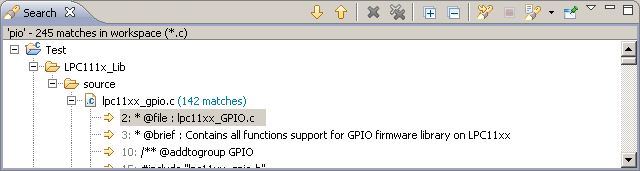
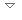

Search View
Any matches are reported in the Search view.

When you have completed a search and have results in the Search view, you can put the focus on that view and get more options on the Search menu.
A C/C++ search can also be conducted via the context menu of selected resources and elements in the following views:
- Outline view
- Search result view
The search context menu is also available in the C/C++ editor. The search is only performed if the currently selected text can be resolved to a C/C++ element.
The type of the selected C/C++ element defines which search context menus are available. The C/C++ editor does not constrain the list of available C/C++ searches based on the selection.
Search view Toolbar:
| Icon |
Command |
Description |
|
Next |
Navigates to the next search result. |
|
Previous |
Navigates to the previous search result. |
|
Remove the Selected Matches |
Removes user selected matches from the search console. |
|
Remove All Matches |
Clears the search console. |
|
Run the Current Search Again |
Run the current search again. |
|
Terminate |
Terminates the current search. |
|
Show Previous Searches |
Shows the list of previously run searches which can be reselected. |
|
Pin the Search View |
Forces the search view to remain on top of other views in the window area. |
 |
Menu |
Lists two selectable view layouts for search results: Flat and Heirarchical. |
|
Minimize Console |
Minimizes the Console view. |
|
Maximize Console |
Maximizes the Console view. |
|